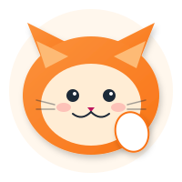
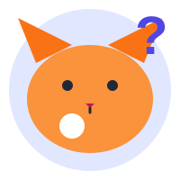

Matemaatika harjutusülesanded ja teooria

Tehted harilike ja kümnendmurdudega, teisendused, tehete järjekord
🟢 Kerged
1. Kui palju on 1 ½ lihtmurruna?
2. Kui palju on ½ · ½?
3. Teisenda 0,5 harilikuks murruks.
🟡 Keskmised
4. Arvuta: ²⁄₃ + ¹⁄₆ = ?
5. Mis on arvu ⁴⁄₇ pöördväärtus?
6. Teisenda 0,125 harilikuks murruks.
🔴 Rasked
7. Arvuta: 2 + 3 · 4 − (10 − 8)² = ?
8. Arvuta: ³⁄₄ : ¹⁄₂ − ²⁄₃ = ?
9. Kui 0,(3) tähendab lõpmatut perioodilist murdu 0,333..., siis kui palju on 0,(3) + 0,(6)?
Teisenda segaarv 3 ²⁄₅ lihtmurruks ja lihtmurd ¹⁷⁄₃ segaarvuks.
KergeArvuta:
²⁄₃ + ¹⁄₆ = ?
KergeTeisenda kümnendmurd 0,75 harilikuks murruks ja taanda lõpuni.
KergeArvuta avaldise täpne väärtus:
(3 ³⁄₅ : 2,4 · ½ − ¹⁄₆) · 3,375 − 1,75
KeskmineArvuta avaldise täpne väärtus:
(43 ¹⁄₃ − 42,9) : 39 + 0,05
9 ¹⁄₆ · ²⁄₁₅
(Ülemine avaldis jagatakse alumisega)
KeskmineKirjuta avaldis ja arvuta täpne väärtus:
Korruta arvude 2 ¹⁄₃ ja 1,25 vahe arvude 2 ja 3,25 pöördväärtuste summaga.
KeskmineArvuta avaldise täpne väärtus:
12345 − [12345 − (12345 − 1)] · 12345
KeerulisemArvuta avaldise täpne väärtus:
(2 ¹⁄₄ − 0,75) · ²⁄₃ + 1 ¹⁄₆ : 3 ½
KeerulisemLeia arv x, kui:
²⁄₃ · x + ¹⁄₄ · x = 55
KeerulisemOsa ja osamäära leidmine, protsentülesanded igapäevaelust
🟢 Kerged
1. Kui palju on 10% arvust 300?
2. Kui palju on 50% arvust 80?
3. Raamat maksab 20 €. Allahindlus on 10%. Kui palju tuleb maksta?
🟡 Keskmised
4. 36 on mingi arvu 40%. Milline on see arv?
5. Hind tõusis 50 €-lt 60 €-le. Mitu protsenti hind tõusis?
6. Jakk maksab 120 €. Esmalt tehakse 25% allahindlus. Kui palju jakk maksab?
🔴 Rasked
7. Hinda tõsteti 20% ja seejärel alandati 20%. Milline on lõpptulemus?
8. Poes on kaup hinnaga 150 €. Esmalt tehakse 20% allahindlus, siis veel 10% sooduskoodiga. Kui palju maksab kaup lõpuks?
9. Rahvaarv kasvas aastaga 5%. Aasta lõpus oli elanikke 63 000. Kui palju oli neid aasta alguses?
Klassis on 30 õpilast. Neist 60% on tüdrukud. Mitu poissi on klassis?
KergeRaamat maksab 15 €. Pood teeb 20% allahindlust. Kui palju maksab raamat pärast allahindlust?
KergeKahes kilogrammis maasikamoosis on 45% suhkrut. Kolmes kilogrammis vaarikamoosis on 55% suhkrut. Mitu kilogrammi suhkrut sisaldab segu, kui need kaks moosi kokku segada?
KergePoes on allahindlus: kõik hinnad on langetatud 30%. Mart ostab jaki, mille uus hind on 56 €. Kui palju maksis jakk enne allahindlust?
KeskmineIsa teenib kuus 840 € ja ema palk moodustab sellest 125%. Isa palka tõsteti 25% ja ema palk vähenes 20%.
a) Kui palju teenivad ema ja isa nüüd kokku?
b) Kuidas muutus pere sissetulek?
Vannitoa põranda pindala on 4,8 m². Põrand kaetakse ruudukujuliste plaatidega, mille külg on 20 cm. Üks plaat maksab 0,45 €. Kui palju makstakse plaatide eest, kui kliendikaardiga saab soodustust 5%?
KeskmineKaupluses tõsteti hinda esmalt 20% ja seejärel alandati uut hinda 20%. Algne hind oli 150 €. Kui palju maksab kaup nüüd ja kas lõpphind on sama mis algne?
KeerulisemKooli rahulolu-uuringus vastas 320 õpilasest 85%, et neile meeldib koolis. Nendest rahulolevatest 40% nimetas põhjuseks sõbrad ja 35% head õpetajad. Mitu õpilast nimetas põhjuseks head õpetajad?
KeerulisemPere igakuine elektriarvete summa kasvas jaanuarist märtsini järgmiselt: jaanuaris 45 €, veebruaris tõusis 20% ja märtsis langes veebruari summast 10%. Kui palju maksis pere elektri eest kolme kuu jooksul kokku ja kui palju oli keskmine kuuarve?
KeerulisemKolmnurgad, ruudud, ristkülikud, ring — pindala, ümbermõõt, omadused
🟢 Kerged
1. Ruudu küljepikkus on 7 cm. Kui suur on selle pindala?
2. Kolmnurga nurkade summa on alati…
3. Ristkülik on 8 cm pikk ja 3 cm lai. Kui suur on selle ümbermõõt?
🟡 Keskmised
4. Ringi raadius on 5 cm. Kui suur on selle ümbermõõt? (π ≈ 3,14)
5. Täisnurkse kolmnurga kaatetid on 6 cm ja 8 cm. Kui pikk on hüpotenuus?
6. Mitu cm² on 2,5 dm²?
🔴 Rasked
7. Ringikujulisel väljakul on raadius 10 m. Selle keskele rajatakse ruudukujuline purskkaev küljepikkusega 4 m. Kui suur on allesjääv murupind? (π ≈ 3,14)
8. Võrdhaarse kolmnurga alus on 10 cm ja haar 13 cm. Kui suur on selle kõrgus alusele?
9. Kuubi serva pikkus on 5 cm. Kui suur on selle täispindala?
Ruudu küljepikkus on 9 cm. Leia ruudu pindala ja ümbermõõt.
KergeRingi raadius on 7 cm. Leia ringi pindala ja ümbermõõt. (π ≈ 3,14)
KergeVõrdhaarse kolmnurga alus on 10 cm ja haar on 13 cm. Leia kolmnurga pindala ja ümbermõõt.
KergeReklaamtahvli pindala on 6,25 m² ning laius ⁵⁄₆ m.
a) Mitu meetrit metall-liistu läheb vaja tahvli ääristamiseks?
b) Mitu korda on reklaamtahvli pikkus
laiusest suurem?
Liiklusmärgi (keelumärk) läbimõõt on 600 mm. Punase rõnga laius on 0,5 dm. Leia punase rõnga pindala. Vastus anna 1 cm² täpsusega.
KeskmineToa põrand on ristkülikukujuline mõõtmetega 4,5 m × 3,2 m. Põrand kaetakse parketiga, mida müüakse ruutmeetri kaupa hinnaga 18 €/m². Kui palju maksab parkett kogu toale?
KeskmineRuudu ABCD küljepikkus on 6 cm. Ruudu sees on sektor tipuga A ja nurk ∠EAB = 60°. Leia viirutatud osa (ruut miinus sektor) ümbermõõt ja pindala.
KeerulisemRuudu ABCD küljepikkus on 4 cm. Ruudu sisse on joonestatud veerandringjoon (raadiusega 4 cm, keskpunktiga nurgas A). Leia värvitud osa pindala (ala, mis jääb ruudu sisse, kuid veerandringi alla). Vastus ümarda kümnendikeni.
KeerulisemRingikujulisel väljakul on raadius 15 m. Selle keskele ehitatakse ristkülikukujuline purskkaev mõõtmetega 4 m × 3 m ja purskkaeva ümber 1 m laiune kivitee. Kui palju murupinda jääb alles? (π ≈ 3,14)
KeerulisemTekstülesanded, mis nõuavad mõistmist ja mitme sammu rakendamist
🟢 Kerged
1. Auto sõidab kiirusega 60 km/h. Kui kaugele jõuab ta 2 tunniga?
2. 45 minutit on tundides…
3. Poes on 120 õuna. ¹⁄₄ neist on punased. Mitu punast õuna on?
🟡 Keskmised
4. Kaks jooksjat jooksevad teineteise poole kiirusega 8 km/h ja 12 km/h. Kui kiiresti nad lähenevad?
5. Jalgrattur sõitis 36 km 1,5 tunniga. Milline oli tema keskmine kiirus?
6. Mariliis korjas 18 marja, mis on ³⁄₅ Anneli saagist. Mitu marja korjas Anneli?
🔴 Rasked
7. Rong sõitis esimesed 2 tundi kiirusega 90 km/h ja järgmised 3 tundi kiirusega 60 km/h. Milline oli keskmine kiirus kogu teekonnal?
8. Nõu mahutab 12 liitrit. See täidetakse esmalt ²⁄₃ ulatuses ja siis valatakse pool täidetust välja. Kui palju vett on nõus?
9. Isa on 3 korda vanem kui poeg. Nelja aasta pärast on isa 2,5 korda vanem. Kui vana on poeg praegu?
Auto sõidab kiirusega 80 km/h. Kui kaugele jõuab auto 2 tunni ja 30 minutiga?
Kerge36 kommi jagatakse kolme lapse vahel nii, et vanim saab pool, keskmine kolmandiku ja noorim ülejäänu. Mitu kommi saab igaüks?
KergeKolm sõpra korjavad seeni. Aivar korjas 24 seent, mis on ²⁄₃ Berto seenesaagist. Berto korjas omakorda ³⁄₄ sellest, mida korjas Cecilia. Mitu seent korjasid nad kokku?
KergeKooli sööklas on lauas 8 kohta. Lõunat sööb 120 õpilast.
a) Mitu lauda on sööklas vähemalt vaja?
b) Mitu vahetust on vaja, et kõik 120 õpilast saaksid süüa,
kui sööklas on 6 lauda?
Kahe linna vahel on 180 km. Ühest linnast alustab jalgrattur kiirusega 20 km/h ja teisest linnast samal ajal jalakäija kiirusega 5 km/h. Nad liiguvad teineteise poole.
a) Mitme tunni pärast nad kohtuvad?
b) Kui kaugel kohtumispunktist on kumbki linn?
Kaks kraani täidavad basseini. Esimene kraan täidab basseini 6 tunniga, teine 4 tunniga. Kui kaua läheb aega basseini täitmiseks, kui mõlemad kraanid on korraga avatud?
KeskmineAuto sõitis kokku 360 km, läbides ⁵⁄₉ vahemaast ajaga 2 tundi ja 40 minutit. Halbade ilmastikuolude tõttu langes auto keskmine kiirus ülejäänud osal ¹⁄₃ võrra. Kui palju aega kulus autol ülejäänud osa läbimiseks?
KeerulisemIsa on praegu 3 korda vanem kui poeg. 12 aasta pärast on isa 2 korda vanem kui poeg. Kui vanad on isa ja poeg praegu?
KeerulisemRong väljub linnast A kell 8:00 kiirusega 90 km/h. Kell 9:30 väljub samast linnast kiirong kiirusega 150 km/h sama marsruuti mööda. Mis kellaks kiirong esimese rongi kätte jõuab ja kui kaugel linnast A see toimub?
Keerulisem